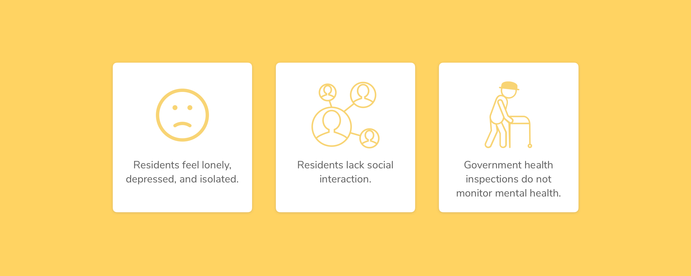

Design
Research
Prototyping
role
team
Nicole Ang
Killian Huang
Sarah Wang
Killian Huang
Sarah Wang
timeframe
March – May 2019
project overview
Within the health sector, nursing facilities are an underserved part of the population. In nursing homes, many residents feel lonely, depressed, and isolated, due to a lack of social interaction with other people. The team designed an application to address social isolation and mitigate mental health issues for residents.
problem space
Approximately 20 percent of all nursing home residents have major depression (about 350,000 people in the U.S.) and an additional 30 percent have significant depressive symptoms. 35% of residents state that they suffer from loneliness, and the risk for mortality is significantly higher for this group of residents. While nursing homes undergo a health inspection process (held by Centers for Medicare and Medicaid Services) every quarter, none of the measurements are directly related to the mental health of the residents.
research
The team conducted extensive online research, made visits to multiple nursing homes, interviewed caregivers, and consulted our healthcare mentor before settling on a specific target area in the nursing home sector.
questions
- Do residents use technology?
- What is the daily process for a caregiver in the nursing home?
- What record keeping systems are being used?
- What are the biggest inefficiencies in nursing homes?
- What are the needs for caregivers? residents? family or friends of residents?
findings
Residents and Technology
In 2017, approximately 40% of US adults ages 65 or older use smartphones (Pew Research Center). However, smartphone use among seniors is increasing every year. In the case that residents have difficulty with technology, staff usually can step in to help.
Volunteers
Volunteers are required to apply before visiting. Once requirements and interviews are completed, volunteers are trained and scheduled to visit. Volunteers participate in social events and help staff out.
Visitors
Visitors, typically family members, have less of a formal process. Once checked in, they can proceed to visit the resident.
System Inefficencies
Even in well maintained, profitable nursing homes, much of record keeping is still done on paper. Most nursing homes use a mix of paper records, spreadsheets, and healthcare software systems (such as Epic) to keep track of data.
Regulation
Social workers conduct checks in nursing homes to ensure that they are meeting standards because it is an often neglected area of the healthcare system. It is the one of the most regulated industries.
Psycho-social Stimulation
Activities and volunteers are extremely important to nursing homes. Without the psycho-social stimulation, residents are less likely to be healthy and happy. Nursing home staff that we spoke to mentioned that "residents love to see new faces."
focus areas
We mapped some of the problemspace and identified two key areas that we could focus on.
Volunteers
Volunteers and care givers are the residents' primary forms of social interaction. Finding ways to bring people in to socialize with residents was a potential area that we could explore.
Regulation
The other area that we could address is regulation. Since negligence is far from uncommon in nursing homes, we decided that the second focus area was finding areas in the system to introduce accountability.
While our mentor preferred for us to focus on the regulation aspects of the home industry (specifically, record keeping and telehealth), we decided to hone in on the social aspects of nursing homes.
design opportunity
Currently, volunteers are the major source of social interaction at nursing homes. They provide valuable interaction and mental stimulation to residents, which makes residents less likely to suffer from cognitive impairment. Even thought this seems like an easy solution, it is far from an effective one, as most nursing homes already have volunteer programs. From a volunteer's perspective, it is difficult to properly engage with the residents, and a structured way to meet and interact is currently lacking. Volunteers receieve litle to no guidance before they arrive for their session. The benefits that volunteers can bring to nursing home residents are significantly limited due to the lack of direct connection and direction.
solution
Chirp provides a way for volunteers, residents, and staff to engage more easily. Volunteers and residents can get to know each other better, and staff can help foster these social interactions. Using similar psychological theories behind social connection applications, Chirp encourages more social interaction and provides opportunities for the residents to connect with people. Our solution gives both volunteers and residents a chance to express their interests and gives them the power to initiate a conversation or activity.
connect
Residents and volunteers each have their own profiles with information such as interests, answers to icebreaker questions, a biography, and other details about themselves. Both residents and volunteers can view various user profiles and match with each other based on these profiles.
messages
Users can hold conversations with each other directly in the app. If residents and volunteers click in the chat, they can directly schedule with the scheduling functionality.
your events
Users can view their schedule and register for events to socialize and connect with others.
meet
Residents and volunteers can meet with each other individually during visitation hours or schedule to interact during general nursing home events.
reflection
This project started out as a very nebulous challenge, as no one in the team had any expertise in the medical field. With the help of professors, mentors, and the staff of nursing homes, we were able to get some insight into an often neglected space in the healthcare industry. Because the American healthcare industry is so profit driven, many people are left behind in the system. If given more time, we would have liked to make a prototype of the application and test it with nursing home residents and volunteers.